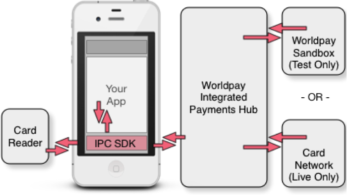
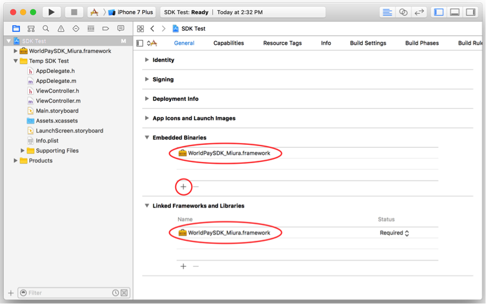
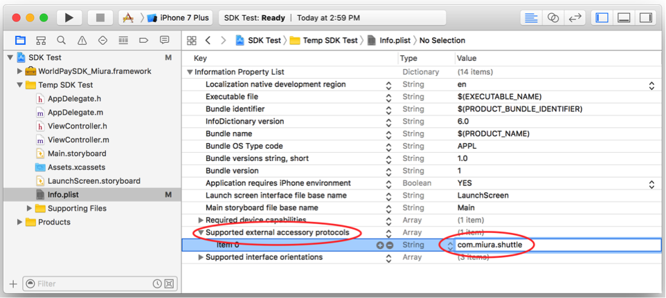

Developer Guide Document
Introduction
The Worldpay Total Integrated Payment Client Software Development Kit (IPC SDK) is a wonderful way for you to develop rich mobile applications in the native language of the mobile device. We currently have SDKs for iOS, Android, and Windows. Besides allowing you to develop native applications, there are two other compelling reasons to choose this platform:
We do all of the device management of your card reader. No need to worry about device drivers. No Bluetooth management functions. Nothing. We take care of those and report back to you when something of interest happens.
You do not have to undergo EMV certification testing, because we protect you from the card data. This would otherwise be a costly and time-consuming activity.
The SDKs provide you with the glue necessary to talk with a card reader (if you use one) and the code to make the remote calls to the Worldpay Integrated Payments Hub.

Note that while one of the advantages to using the IPC SDK is the management of the card reader, you can still use this library for card not present applications or any other app that wants access to our vault, tokenization, and customer management features. Think you might one day move from card not present to card present? Develop against the app today and rest comfortable that your app will be future-proofed when you are ready to make the change – same code base.
The IPC SDK installs alongside your software - adding transaction processing to your applications. It facilitates all transactional communication between the Worldpay Integrated Payments Hub (IPH) and approved hardware devices to isolate payment data and keeps it separate from your software application.
Requirements
- Platform - iOS 8 and later
- Supported Devices - Miura M010 Shuttle
Overview of the Software Development Kit API
Your starting point for all of the operations available in the IPC SDK is the WorldpayAPI object. This object is a singleton accessible by the instance method on the WorldpayAPI class.
Securely Acquiring Card Information
The IPC SDK manages all interaction with the attached card reader, and then uses the card account information to perform transactions through the Worldpay Total Integrated Payment Hub. The IPC SDK also provides a way for you to manually enter card information for those times when the card is not present for the transaction.
The IPC SDK supports the following methods to capture card information:
| Function | Description |
|---|---|
| Address the Attached Device | Gets a reference to the attached device and allows you to set up handlers for device events. See: [WorldpayAPI swiperWithDelegate:] |
| Magnetic Stripe Reader | Captures the card information from the magnetic stripe reader on the attached device. See: [WPYSwiper beginEMVTransactionWithRequest:transactionType:terminalSelectsApplication:commonDebitMode:] |
| EMV Contact | Obtains card information from a chip card inserted in the EMV reader of the attached device. See: [WPYSwiper beginEMVTransactionWithRequest:transactionType:terminalSelectsApplication:commonDebitMode:] |
| Manual Entry | Presents a form where the customer can manually enter the card number, expiration date and postal code, and then calls the Integrated Payment Hub to perform the specified payment transaction. Returns the result of the payment transaction to the associated delegate See: [WPYManualTenderEntryViewController initWithDelegate:tenderType:request:] |
Making Payments
The following table shows the transactions you can use to manage payments. The IPC SDK takes care of the network interactions with the Integrated Payment Hub.
| Function | Description |
|---|---|
| Authorize | This call authorizes a transaction but does not capture the transaction for settlement. In a card-present environment, this option is most commonly used in serviceindustry transactions where an initial amount is authorizedprior to a gratuity being added. If the Authorization Onlycall is used, a subsequent Prior Auth Capture call must be made to capture the transaction for settlement. See: [WorldpayAPI paymentAuthorize:withCompletion:] |
| Prior Auth Capture | This call allows a previously authorized transaction to be captured for settlement. In a card-present environment, Prior Auth Capture is commonly used when the transactionamount must be modified during capture, e.g., in the service industry when a gratuity is added to the original amount. See: [WorldpayAPI paymentCapture:withCompletion:] |
| Charge | This call authorizes the transaction and, if successful, captures it. This is the most common call for card-present transactions. (For some transactions, it may be necessary to separate these steps, e.g., in the service industry example described above. In such cases, separate calls to Authorize Only and Prior Auth Capture should be used instead of Charge.) See: [WorldpayAPI paymentCharge:withCompletion:] |
| Refund | The Refund method must be linked to a settled transaction. This is done by specifying the transactionId from the original Authorization or Charge as part of the request. By default, this method refunds the FULL amount of the transaction. However, you can perform a partial refund by passing a specific amount. If a refund is attempted on a transaction that has not yet settled, the Integrated Payment Hub will automatically run a Void on the transaction. The transactionType in this case will switch to Void. See: [WorldpayAPI paymentRefund:withCompletion:] |
| Void | A void may be applied against any charge that has not yet settled; it effectively undoes the original authorization or charge as if it had never taken place. See: [WorldpayAPI paymentVoid:withCompletion:] |
| Credit | A credit is a payment from a merchant account to a credit card or checking account that does not have to be linked to a previous transaction. To use the Credit method, the merchant must be specifically enabled for it on the Worldpay Total platform. This is not recommended due to the risk of misuse. See: [WorldpayAPI paymentCredit:withCompletion:] |
Controlling Settlement with Batches
All transactions that have been authorized and captured are associated with a batch. A batch is considered open until it is settled, which completes the captured transactions and allows funds to be transferred from the customers to the merchant. While open, transactions can still be altered (i.e. voids, adding a tip). Once a batch is settled, it is considered closed; no alterations can be made to transactions in a closed batch.
In some cases, your account may be configured to automatically close out all open transactions and start a new batch at a particular time every night. However, you can close a batch at any time using the Close method. The API also provides reporting methods that allow you to retrieve details for both open and closed batches for a particular merchant.
All batches are automatically closed at 4:00AM ET.
| Function | Description |
|---|---|
| Close a Batch | Closing the current open batch settles all captured transactions in the batch See: [WorldpayAPI closeCurrentBatchWithCompletion:] |
| Retreive Current Batch ID | Retrieve the ID for the current batch See: [WorldpayAPI getCurrentBatchWithCompletion:] |
| Retrieve Transactions in a Batch | Calling this method retrieves the transactions in the specified batch. It returns an array of the transactions in the open batch, along with the full details of each asreturned during the original authorization. See: [WorldpayAPI getTransactionsInBatch:withCompletion:] |
Setting up Your Project in Xcode
Step 1 – Get the Lastest IPC SDK
Download the latest IPC SDK framework for iOS from GitHub.
Step 2 - Add the framework to your Xcode project
- Select the “General” tab in your project’s settings
- Press the “+” button under the “Embedded Binaries” section
- Press the “Add Other …” button on the “Choose items to add dialog”
- Navigate to the WorldPaySDK_Miura.framework file you downloaded in the prior step and press “Open”
This will copy the file into your project, add the embedded binary and register the framework in your project. When you are done, the configuration should look like this:

Step 3 – Add Your Device to Supported Protocols
Add the Miura device to the supported protocols in your Info.plist file
- Navigate to the Info.plist file in your project
- Left-click and add a “Supported external accessory protocols” row if it doesn’t already exist
- Add “com.miura.shuttle” to the list of protocols
When you are done, the configuration should look like this:

Your Application
Once the framework installed and the project has been configured, you can begin to code your application. You can use the features of the IPC SDK in a variety of ways to meet your payment needs.
To get you started here is a basic application flow:
- Register environment
- Obtain an authorization token
- Implement swiper delegate methods
- Get card information and process the transaction
- Handle the transaction response
Step 1 – Register Environment
Before any calls to the API can be made, the environment must be registered using [WorldpayAPI registerEnvironment:]. It is best to do this in your AppDelegate’s didFinishLaunching:withOptions: method, and once it has been set, it cannot be changed again during runtime.
Step 2 – Obtain an Authorization Token
Your application has to authenticate itself with the Integrated Payment Hub before you can make payment transactions. The token is cached and used for subsequent calls. This is called using [WorldpayAPI generateAuthToken:withCompletion:] method which takes an WPYAuthTokenRequest object as input. Note that this authentication token represents the session with the Integrated payments Hub. It is not the same thing as a tokenized payment method. You will need to provide your secureNetId and secureKey (provided with your sandbox account) as illustrated below.
Setting a terminal ID and/or terminal vendor with the auth token causes that TID to populate automatically on all payments processed through the terminal hardware. If a TID is not set, and not populated prior to making a payment request, the terminal serial number will be used as the TID.
WPYAuthTokenRequest *request = [[ WPYAuthTokenRequest alloc ] init ];
request.secureNetId = self.secureNetId.text;
request.secureNetKey = self.secureNetKey.text;
request.merchantPartnersId = self.merchantPartnersId.text;
request.merchantPartnersPin = self.merchantPartnersPin.text;
request.applicationId = self.applicationId.text;
request.terminalId = self.terminalId.text;
request.terminalVendor = self.terminalVendor.text;
[ super showActivityIndicator ];
[[ WorldpayAPI instance ] generateAuthToken:request withCompletion:^(WPYAuthTokenResponse *response, NSError *error) {
[ super hideActivityIndicator];
if(response != nil && response.authToken.length > 0)
{
self.authToken.text = response.authToken;
}
else
{
UIAlertController *alert = [UIAlertController alertControllerWithTitle:@"Server Error" message:error.localizedDescription preferredStyle:UIAlertControllerStyleAlert];
[alert addAction:[UIAlertAction actionWithTitle:@"Dismiss" style:UIAlertActionStyleDefault handler:nil]];
[self presentViewController:alert animated:YES completion:nil];
}
The IPC SDK calls the withCompletion block^1 that you provide when the
response is returned from the Integrated Payment Hub.
Step 3 – Implement Mandatory Swiper Delegate Methods
WPYSwiper is a singleton class that represents the attached card reader. Your application is notified about actions taken by the card reader through methods on a WPYSwiperDelegate that you provide. The delegate defines a number of callback methods, some of which are mandatory:
/* This delegate function is called when the connection to the swiper hardware fails to be created*/
- (void) didFailToConnectSwiper:(WPYSwiper *)swiper;
/*This delegate function is called when the communication channel to the credit card terminal could not be opened, but will be reattempted */
- (void) willConnectSwiper:(WPYSwiper *)swiper;
/* This delegate function is called when an error has been detected when performing a requested task*/
- (void) swiper:(WPYSwiper *)swiper didFailWithError:(NSString *)error;
/*This delegate function is called after the terminal has generated the Transaction Certificate or Application Authentication Cryptogram and no more online requests are pending.*/
- (void) swiper:(WPYSwiper *)swiper didFinishTransactionWithResponse:(WPYPaymentResponse *)response;
/* This delegate function is called when an attempt to make a payment failed with a non-authorization related error.*/
- (void) swiper:(WPYSwiper *)swiper didFailRequest:(WPYPaymentRequest *)request withError:(NSError *)error;
For a full listing of swiper delegate methods, see WPYSwiper.
Step 4 – Get Card Information and Process Transaction
The IPC SDK interacts with the card reader to prompt the cardholder through confirming the amount of purchase and capturing payment card information, either through inserting the card in the chip reader, or by swiping it and reading the track data. Your application simply has to initiate the transaction, and the IPC SDK takes care of the rest:
WPYSwiper *swiper = [[ WorldpayAPI instance] swiperWithDelegate:delegate;
[ swiper connectSwiperWithInputType:WPYSwiperInputTypeBluetooth];
// After "didConnectToSwiper:" callback
WPYPaymentAuthorize *request = [[ WPYPaymentAuthorize alloc] init];
request.amount = [ NSDecimalNumber decimalNumberWithString:@"10.00" ];
// Sale with cashback enabled. Use WPYEMVTransactionTypeGoods for sale without cashback enabled.
WPYEMVTransactionType type = WPYEMVTransactionTypeCashback;
// This handles both contact and magnetic stripe. If a chip enabled card is used the SDK
// will prevent processing unless there are no supported Application Ids or
// if the chip fails to read and requires technical fallback.
[ swiper beginEMVTransactionWithRequest:request transactionType:type];
//Handle payment errors
(void)swiper:(WPYSwiper *)swiper didFailRequest:(WPYPaymentRequest *)request withError:(NSError *)error
{
}
//Handle processed payment
(void) swiper:(WPYSwiper *)swiper didFinishTransactionWithResponse:(WPYPaymentResponse *)response;
{
//Clear the screen of the "Approved" or "Declined" message when ready
[ swiper swiperClearDisplay];
}
Step 5 – Handle the Response
When the transaction response is received from the Integrated Payment Hub, WPYSwiper will call either the [WPYSwiperDelegate swiper:didFinishTransactionWithResponse:] or the [WPYSwiperDelegate swiper:didFailRequest:withError:] methods on the WPYSwiperDelegate you provided. You can look in the returned WPYPaymentResponse for information related to the transaction such as whether it was approved or declined. The responseMessage attribute provides a detailed description of the response.
Additional Reference Information
You can find more information from the following sources:
- The developer website
- The Worldpay US Integrated Payments Client GitHub page
- The Worldpay IPC SDK for iOS Sample Application